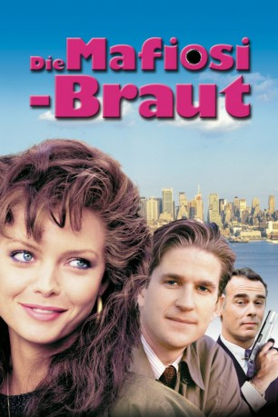

#7341 Die Mafiosi-Braut
Alternativ: Married to the Mob
Auszeichnungen: für 1 Oscars nominiert
 
 IMDB-Wertung: 6.1 / 10
IMDB-Wertung: 6.1 / 10  Metascore: 0
Metascore: 0 
Die schöne Angela führt als Ehefrau des Gangsters Frank DeMarco ein Leben im Luxus. Doch als ihr Gatte von dem eifersüchtigen Mafiaboss Tony Russo umgebracht wird, beschließt sie, dem kriminellen Milieu den Rücken zu kehren. Sie zieht mit ihrem kleinen Sohn nach New York und will ganz neu anfangen. Das ist allerdings leichter gesagt als getan, denn nicht nur der lüsterne Tony hat ein Auge auf die Mafiabraut geworfen, sondern auch der schlitzohrige FBI-Agent Mike.
Jahr: 1988
Dauer: 98 Minuten
FSK: 16
Land: USA Studio: Orion PicturesTonspuren: DD2.0 - ,
Untertitel:
Auflösung: 1080p (1920x1080) Größe: 6881 MB
Genre: Komödie, Krimi, Liebe
Regisseur:  Jonathan Demme
Jonathan Demme
Drehbuch: Barry Strugatz
Soundtrack:
Darsteller:
 Alec Baldwin als 'Cucumber' Frank de Marco
Alec Baldwin als 'Cucumber' Frank de Marco- Captain Haggerty als 'The Fat Man'
 Charles Napier als Angela's Hairdresser
Charles Napier als Angela's Hairdresser Michelle Pfeiffer als Angela de Marco
Michelle Pfeiffer als Angela de Marco Joan Cusack als Rose
Joan Cusack als Rose Ellen Foley als Theresa
Ellen Foley als Theresa O-Lan Jones als Phyllis
O-Lan Jones als Phyllis Mercedes Ruehl als Connie Russo
Mercedes Ruehl als Connie Russo Matthew Modine als Mike Downey
Matthew Modine als Mike Downey Oliver Platt als Ed Benitez
Oliver Platt als Ed Benitez Frank Ferrara als Vinnie 'The Slug'
Frank Ferrara als Vinnie 'The Slug' Dean Stockwell als Tony 'The Tiger' Russo
Dean Stockwell als Tony 'The Tiger' Russo- Gary Goetzman als The Guy at the Piano
 Nancy Travis als Karen Lutnick
Nancy Travis als Karen Lutnick Trey Wilson als Regional Director Franklin
Trey Wilson als Regional Director Franklin Colin Quinn als Homicide Detective
Colin Quinn als Homicide Detective- David Johansen als 'The Priest'
 Tracey Walter als Mr. Chicken Lickin'
Tracey Walter als Mr. Chicken Lickin' Chris Isaak als 'The Clown'
Chris Isaak als 'The Clown'- Tony Fitzpatrick als Sourpuss Immigration Man
- Al Lewis als Uncle Joe Russo
 Obba Babatundé als The Face of Justice
Obba Babatundé als The Face of Justice- Ellie Cornell als The Pushy Reporter
- Todd Solondz als The Zany Reporter
 Roma Maffia als Angie's First Customer!
Roma Maffia als Angie's First Customer! Joe Spinell als Leonard 'Tiptoes' Mazzilli
Joe Spinell als Leonard 'Tiptoes' Mazzilli- Carlos Anthony Ocasio als Joey's New Pal
- Jonathan Demme als Man getting off elevator , uncredited, unconfirmed
 D.J. Sharp als Vocal Effects , uncredited
D.J. Sharp als Vocal Effects , uncredited Paul Lazar als Tommy
Paul Lazar als Tommy- Marlene Willoughby als Mrs. 'Fat Man'
- Frank Aquilino als Conductor
- Jason Allen als Tony Russo, Jr.
- Diane Puccerella als Three-Card Monte Victim
- Suzanne Puccerella als Three-Card Monte Victim
- Anthony J. Nici als Joey de Marco
- Tara Duckworth als Tara
- Max the Dog als 'Lucky' de Marco
- Frank Gio als Nick 'The Snake'
- Gary Howard Klar als Al 'The Worm'
- Carlos Giovanni als Carlo Whispers
- Warren Miller als Johnny 'King's Roost' King
- Steve Vignari als 'Stevarino'
- James Reno als 'Butch'
- Daniel Dassin als Maitre D'
- Maria Karnilova als Frank's Mom
- Dodie Demme als Pigs Knuckles Shopper
- Gene Borkan als Goodwill Executive
- Wilma Dore als Uptown Saleslady
- True Image als A Cappella Singers
Datei: X:\1988\Mafiosi-Braut, Die (1988, FSK16, 1920x1080).mkv seit 17.10.2017
Festplatte: HD 1987-1991
 Es gibt insgesamt 66 Filme in der Gruppe '1988'
Es gibt insgesamt 66 Filme in der Gruppe '1988'